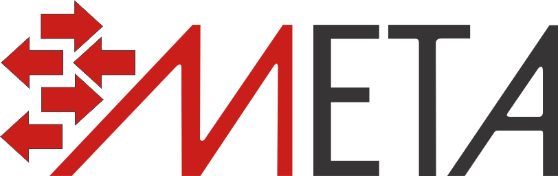
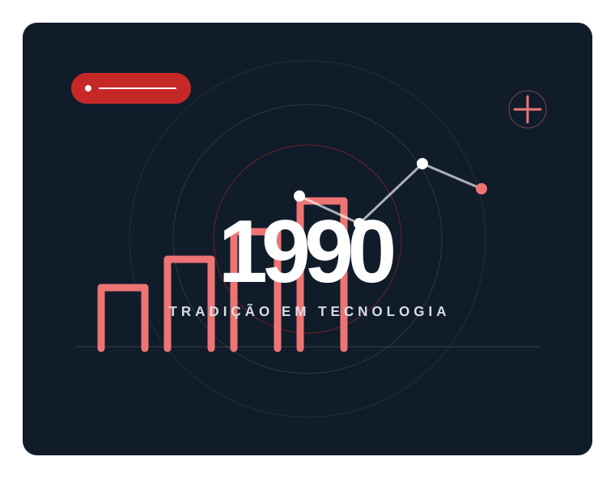
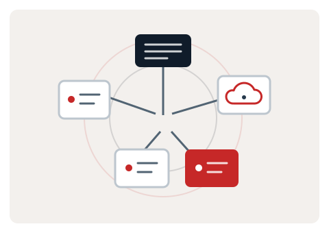
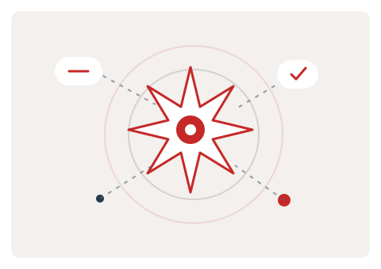
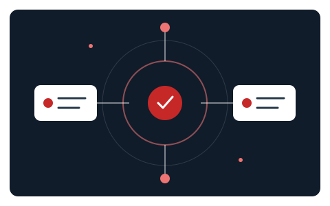

01 / Desenvolvimento
Sistemas sob demanda
Sistemas customizados para os processos e as necessidades específicas da sua empresa.
Vamos conversar
Tecnologia feita para empresas
Tradição desde 1990
Desenvolvimento sob demanda, consultoria em infraestrutura, redes e serviços de nuvem, além de implementação de IA — com atenção ao que a sua empresa realmente precisa.

Uma história que acompanha a tecnologia
Desde 1990, somamos experiência e atenção às necessidades de cada empresa para entregar soluções de tecnologia sob medida.
Experiência que evolui
Desde 1990, a Meta Sistemas trabalha para entender as necessidades de cada empresa e propor soluções de tecnologia alinhadas aos seus objetivos.
Atuamos com desenvolvimento de sistemas customizados, consultoria e suporte em infraestrutura de redes, cuidado dos serviços de nuvem da sua empresa e consultoria para implementar inteligência artificial em processos empresariais.
Conte pra gente o que sua empresa precisaComo podemos ajudar
Serviços especializados para apoiar a operação e os próximos passos da sua empresa.
01 / Desenvolvimento
Sistemas customizados para os processos e as necessidades específicas da sua empresa.
Vamos conversar
02 / Infraestrutura
Orientação e apoio técnico para planejar, configurar e cuidar da infraestrutura de TI, das redes e dos serviços de nuvem da sua empresa.
Vamos conversar
03 / Inteligência artificial
Consultoria para identificar oportunidades e orientar a implementação de IA nos processos da sua empresa.
Vamos conversarRelações de confiança
A Meta Sistemas mantém relações estratégicas com Microsoft e Acronis, ampliando as possibilidades de tecnologia para seus clientes.

O próximo passo começa aqui